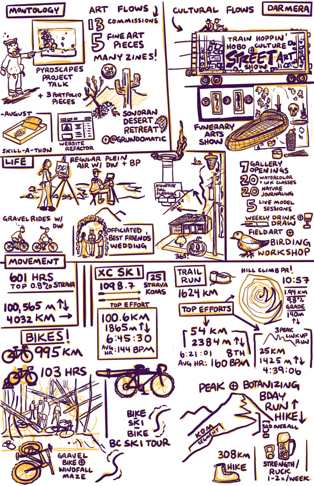

Visual Review 2025

2025 review
TL;DR Overall 2025 was a great year to be a Renaissance Human. I made a bunch of art, sold a bunch of art, read a lot, thought a lot, hung out with Caryn a lot and moved a lot! Happy New Year to some of you already! Here is to a great 2026!
Montology
I did 13 art commissions this year and sold 5 original art pieces at a few shows I was involved in at Darmera and at another gallery I got invited to. I also sold many zines, but do not have a total yet because I have to finish up the finances for Darmera for the year. In August I did a month-long skill-a-thon for moving some projects and ideas forward. Sometimes you just need to take the time to plan and do the initially painful baby steps of being really bad at something new. The growth and forward progress on ideas was worth it!
In October I did a public talk on Pyroscapes for my community. The project started as a failed grant proposal to National Geographic. The idea was to connect the large-scale spatial models of fire recovery I was working on in academia with trail running and on-the-ground nature observations in areas with different recent and historical burn history. I did not get funded but did most of the project anyway in an ERE self-funded sort of way. The talk focused on the fire history of our local area through all of the runs, rides, and observations I made over the past few years. At the talk I had some really challenging questions around fire management that I could only partially answer as my academic work and field work were more basic research and observational. Based on the questions, I have shifted the direction of the project to merge with my sub-alpine and alpine project. I am now trying to understand how the stands of trees are managed through silviculture practices. The spatial models used in this discipline are relatively easy-based and can be parameterized to a first degree with field observations. With a few tweaks to how I am collecting observations while up at the hut, I can easily parameterize some models and make them somewhat localized to the upper watershed basin I am “working” in. The other main takeaway from doing a general talk for a general audience is that scientists are so specialized they might as well be the public. There were some scientists in the audience who asked more detailed questions based on their backgrounds, but a lot of the talk was a new way of seeing for them. So the meta-takeaway of this entire DIY masters in science communication is that it is nearly always about the general audience for the large integrative projects I am interested in doing. The scientist/specialist will be satisfied they can ask harder technical questions. The artist might be snickering at nature comics/journaling as “real art”. The writer will be able to save face that comics, zines, and poems are not “real writing”. The athletes in the audience will cringe because they have much better numbers and never dream of discussing them in public. The fact remains that I can do all of these much better than an average person, but not as a specialist in any single discipline. The combination of physical movement, art, science, writing, poems, and modeling means I can always make something interesting. A renaissance human has to settle for B-B+ on a lot of things and pair them with the things they are specialists in.
Just like I tend to wait until guests are coming over to do a deep clean of my bathroom, I took the time to refactor my personal website before applying for an artist in residence (which I got! Yeah!). The main challenge was to merge and transition away from purely science and academic CV to this Montology project that has an art and commission gallery. Sunsetting the academic parts came with unexpected mixed feelings. Intellectually I am no longer interested, but it took some reflection for the emotions to fully process. I had left academia before to start a company (glad I did!) and then came back to fully decide it was not for me. It was partially that I needed to finish processing giving up the status in some of my social circles of doing academic research. It was partially processing the expectations I had as a young scientist around a research career. This also cannot be completely untangled from my relationship with Sharon and our shared plans and aspirations. I do not have to have clean answers for any of this and can deal with the ambiguity because thinking all the thoughts and feeling all the feels is part of being a messy-ass human. I am personally an order of magnitude happier with DIY tenure and my current life. I would have been happy for other reasons on that different track, but not as full of a person and with “someone who can keep up” (Sharon’s phrase). Processing the death of a lover at a young age is not a common thing. For obvious reasons I went into a deep state of self-reflection and life goal realignment with the intensity of 1000 burning suns. In the process I met Caryn. I love both of these brilliant women! I am a goddamn lucky motherfucker.
I attended a nature journaling retreat in the Sonoran Desert in Arizona. The trip served multiple goals (of course!). I wanted to see the Sonoran Desert through the eyes of local experts, experience it “as a participant” to see if we could pull something like this off at Darmera, and meet new nature journal folks for friendship and potential customers. I am so glad I did this, because it showed me all of the stuff that I had not thought of (duh!). The trip leaders are based in Tucson, but do these retreats all over the world (also Overlander stuff) and have a few DIY print publications with thousands of subscribers. I learned so much from them! They were also so generous with information. Everyone in that community is genuinely kind. There are many teachers and some retirees. Lovely humans!
I have pages of notes and ideas, but the three that were the most interesting from the trip leaders:
- Groups need to be at least 12 or more so that people can go off on their own and not feel like they are being pressured to do everything.
- The demographic of people is pretty wide for these, and mobility issues coupled with facilities on site need to be considered very carefully. If the conditions are too primitive, people will not show up; if they are too nice you will get people who just want to sit inside!
- Cell phones ruin everything - no cell service is crucial to people peopling instead of bringing their digital addictions with them.
So all of those pieces combined are harder to figure out and make it pencil out. As a prototype, one of the other participants teaches birding and bird art, so I invited her up to do a workshop at Darmera in July. She came and stayed with us, we co-led the workshop, did a lot of birding around town, and then hiked up to the Alpine Hut. She showed me how to find all the birds up there. We were lucky to come across a mixed flock where different species of birds hang out and move through the forest together, feeding on their different specialties. Birds serving as collective “eyes” for predators while not directly competing for different types of insects is something I had read about. My previous season up at the alpine hut I noticed that when the sun came over the ridge and directly shone on the open meadows, insects would immediately start warming up and taking flight. The birds would come in and start feeding. I had seen this from a distance, but we planned to be right in the middle of the potential action to “bird”. As an aside, I mostly did not like birding before because I thought there were already too many people interested in birds and that insects deserved WAY more attention. Insects are what birds eat after all! An entomologist once joked with me that you can have an entire genus of insects and you will be the only person in the world to study it. Birds have as many researchers per species as they have feathers. Researcher lice to be preened.
The added bonus of my trip to Southern Arizona was I got to hang out with Jason. We had met IRL at ERE fest 2023. He has since quit his job and is now wheeling and dealing at the swap with his partner. He is also involved in an absurd number of improv groups. I was socially exhausted by proxy! Ha! He wrote about it in his journal, but he seemed like a completely different person because he was SO happy! I am stoked for him! We ate some tacos and then he drove me to visit Brad Lancaster’s block (Rainwater Harvesting author). It was dark but the landscaping of this suburban block spoke for itself. It felt slightly voyeuristic, but in a permaculture nerd sort of way. Mouth breathing sounds…“Ooooo…heeeee could be in there right nooooow writing Volume III!”… mouth breathing sounds.
Darmera
We had 7 gallery opening shows, I taught a bunch of classes, and we continued to do weekly drink and draw as a community event. Through this event I met a local artist who practices minimalism to devote his entire life to photography and making electronic music with homemade synths. He lives above a grocery store in town and until recently worked there. Now he works at the community college teaching photography and developing.
I enjoyed all the shows that we put on this year because they all taught me something! Some taught me who we will no longer work with. Ha! Most of the shows went swimmingly.
The most unhinged show (content wise!) was one curated by a local dude who is part of the train hopping hobo culture (their term!) and street art/graffiti scene. It somehow came together a few days before it was scheduled to open. Hobos came in from all over the US for a yearly hobo gathering at another subcultural center in the next town. For the opening, our tiny little rural gallery could have been in LA. Putting this together was a huge lift for my business partner to organize. We decided no more group shows after this one, only because of the coordination overhead. HA! We had original pieces by semi-famous graffiti artists on loan, a hobo zine subsection, some original sculptures by a pro skateboarder, and a number of gritty-as-fuck action photos from train hopping and the LA underground punk scene. Those bands cannot get permits for shows, so they do popup shows where the location is released an hour before the show. It is fucking wild.
The street art hobo show contrasts nicely with my other favorite show by a semi-famous tattoo artist turned fine artist. She specializes in hyper-realistic floral tattoos of California native plants. Bay Area AF in the best sort of way. She is retiring from tattooing and is transitioning into oil painting full time. Half of the show was her original oil paintings and the other half was a funerary arts show. The artist and her husband started a non-profit around finding land to make a natural burial cemetery. They make beautiful handmade willow caskets and urns. When we were discussing this show last year, she sheepishly asked if we would be open to part of the show being funerary arts. I was like, please tell me more! They came back with the idea to display the Soul Boat casket. I did not even ask my business partner because I knew he would be down. Hell yeah we are doing that!
This show was our last of 2025 and was our most successful by far in terms of attendance, sales, new folks coming into the gallery, and out-of-state visitors involved in other natural burial organizations. We even had sales from her tattoo clients who did not even come to the show; they just emailed me and bought art! The Soul Boat casket had a spot at the front of the gallery. It caused the most interesting interactions with the attendees, especially the ones who had not ever thought about death and then the realization that “oh shit, this is a casket displayed on a wall”. Good art should make the viewer think about things that are deeper than they normally do. The show was also coordinated to open a few weeks before the local tasting menu Death Over Dinner at our friend’s restaurant, hosted by a local hospice death doula. We will die! Are you getting after what you want to be getting after? Tick tick. At the follow-up artist’s talk, some locals came who had been in contact with the town’s cemetery, and there is already a natural burial option! It is a huge section of the cemetery, but it is not advertised. Overall, the show was successful across all the cultural and business dimensions.
Overall, things at Darmera are going pretty well, but we are debating whether we want to continue after our lease is up at the end of 2026. Over the past 2 years we have dealt with 5 significant water-related issues that destroyed art pieces or were insane time investments. They are all uncorrelated except for the fact that they are all related to shoddy/minimal maintenance of the apartments above our space and previous tenants doing stupid things. Cheap rent has a cost! Ha! Most recently we had a pipe fitting burst that was exposed and not correctly installed at all by the previous tenant who was a “handy man”. 4 of the 5 water issues were “fixed” by some other shoddy handy man. My business partner fixed the major leak himself, but we had to battle for over a week with the property management company to get the main water line shut off in the building so we could do the fix. While it was leaking, I rigged up a Rube Goldberg series of buckets and bins that would successionally overflow, moving downhill across the back warehouse space. The leak was ~15 gallons every 24 hours. This interaction with the property management company when something is actually going wrong immediately made us reconsider our plans for continuing the project in this location. We are exploring other options. No sunk costs for us!
Life
Caryn and I did a lot of art together this year. We also went out a lot with Davis for Plein Air. I officiated my best friend’s wedding. My flock is now 6 strong! I really should figure out how to collect tithing like all the other respectable religions.
We had various water drama at our house this year as well. There is a complicated shoddy flashing job around the stovepipe for our chimney. That area is right above a valley. The roof pitch is not very steep and we had a leak develop in February. I patched it, and it was fine for the rest of the season, but it showed back up this fall. The patch had cracked in the sun. That part of the roof is facing the Southwest. It gets baked in the sun in the summer. Also, during the winter when there is a lot of snow, the combination of the stovepipe and the afternoon sun does a localized thaw cycle that was causing some ice damming. Our roof is about 20 years old, so some leaks might be expected. However, I found out after we bought the house that the previous owner power-washed the asphalt shingle roof! FML. Anyway, I tarped the entire area with high-end underlayment to last us for the winter. Will figure it out when it dries out, warms up, and we have stable weather. I will likely just re-roof. This time I am going to put in metal valleys and ice shield on my decking. I want to be dead before I think about it again. The neighbor offered his trailer to haul the shingles to the dump. My other friend has all the roofing tools he will loan me and will help (he just finished his). I would consider a metal roof, BUT the acorns in the fall, especially during mast years, make that a no-go!
Speaking of acorns, we have a family of acorn woodpeckers that live in our front yard tree. They completely decimated an old telephone pole by filling it with acorns over the years. The power company installed metal power poles on our block (actually the entire town), so they will not be responsible for secondary fires if there is one in the area. The top of the new metal poles has a number of ~3/4 inch holes to connect various hardware. Not all of the holes are being used because we are in the middle of the block. The acorn woodpeckers are like “FUCK YES! Acorn-sized holes for food storage.” Every morning and evening when they are active, they deposit acorns into the metal power pole. The poles are hollow, so each acorn plinks its way down 30 feet to the bottom of the pole. I am nearly certain the engineer designing these did not consider acorn-sized holes. Lol. Eventually they will fill it up? Maybe they think they have food storage for years? The unintended uses of the holes and the futility of trying to fill it up this season by the woodpeckers is darkly funny.
We always have a lot of trick-or-treaters. Kids come from across the county to our neighborhood. We have a pumpkin carving and chili party the night before and then have a low-key hangout in the front yard to hand out candy. We had 365 trick-or-treaters this year! Good warm weather and Halloween on a Friday contributed.
Movement
Various stats! Crushed this year! 601 hours of exercise time (top 0.8% Strava), 25 Strava KOMs, 4032 km distance, and 100,565 m of vertical ascent. The past 10 days I reorganized my exercise schedule to roll over all these arbitrary large round numbers today (January 31st). Highlights were 100 km skate ski, bike-backcountry ski-bike adventure, a PR on my local hill climb (10:57, 1.94 km up 9.8% grade for 190 m of vert, HURT!), and various adventure runs or bikes.
Caryn and I did a lot of gravel biking together for her longer training rides. I went on one with Caryn and a group she has been hanging with. We rode for 5 hours and thought we were almost back to the car. A recent windstorm knocked down hundreds of trees on the fire road back to the car! We took an additional 2 hours hike-a-biking 1.5 miles through the dense windfall. Lol. Type II fun at its finest.
Training Learnings
The main learning this year is that I need to more carefully thread the needle with training, rest, and recovery exercise. The first half of the year was built out into 4-week blocks that progressed as I got more fatigued over the block. Then I would have an integration week. Glorious! Then back at it. I needed to be especially careful not to go too hard the first week back after the integration week. It is the training block that is the unit of exercise, not any one individual workout. The other thing I learned was that I need to incorporate some zone 3/4 into my base periods that are nearly exclusively Z1/2. I have a long training history and this is important for fitness as well as mental health.
The main event I trained for was a local 54 km race with 2384 m of gain/loss. I had free entry into it because I helped set the backcountry part of the course last year. I did it in 6:21:01. This was 9 minutes faster than the previous course record and it was what I was shooting to beat. I am stoked on the time on a personal level. However, there were some absolute crushers who showed up. 8th place for mF! My average heart rate was 160 BPM (top of zone 2, can still nose breathe/convo talk). I recovered really well and then transitioned into more speed work and some adventure runs. I sometimes train or do long mountain adventures with a much younger guy (27). Anything under an hour he will crush me. Anything over 3 hours, I will crush him. So we do fun exploratory runs that push both of us. We did a new (as far as we can tell) three-peak link-up complete with lots of glissading down large snow fields and sketchy 5th class scrambling and a ton of route finding (aka guessing). Glissading in running shorts can freeze your bum hole. It was a fun year for trail running!